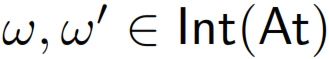
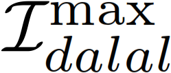
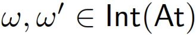
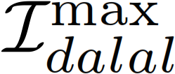
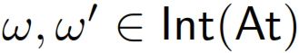
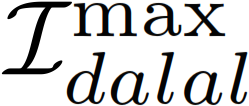

The Dalal distance is a distance function for interpretations in and is defined as for all . Then the Dalal-max inconsistency measure  is defined as (let ) The Dalal-max inconsistency measure has been proposed in [Grant:2013].
 is a distance function for interpretations in
is a distance function for interpretations in  and is defined as
and is defined as  for all . Then the Dalal-max inconsistency measure  is defined as (let
for all . Then the Dalal-max inconsistency measure  is defined as (let  )
)